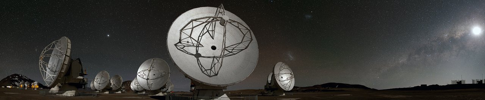
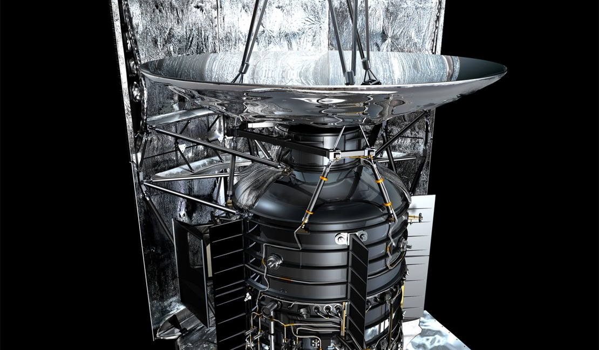
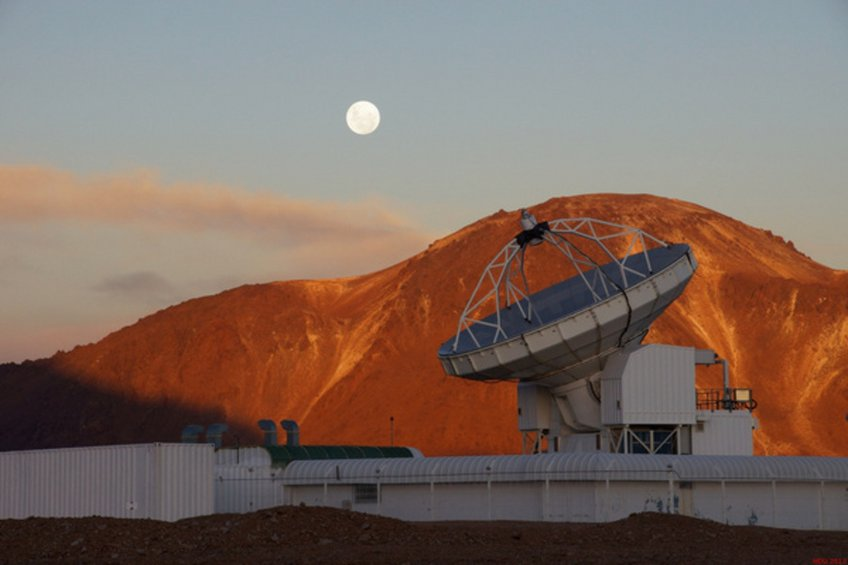
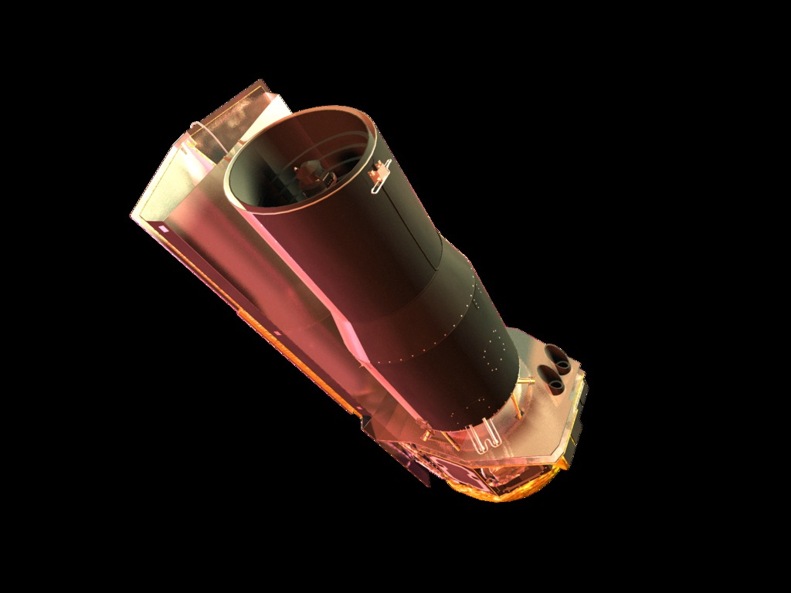
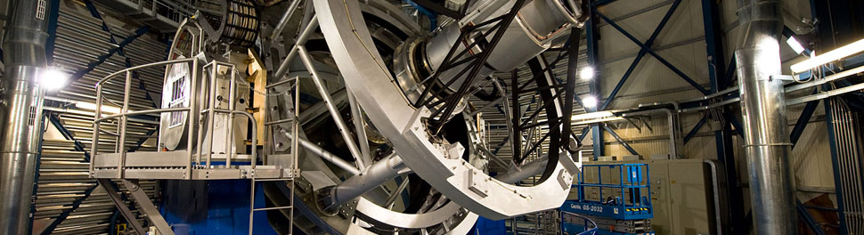
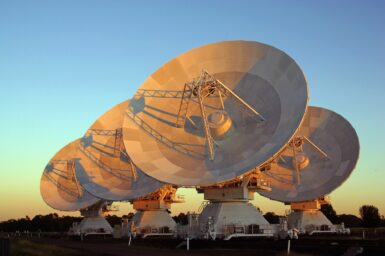
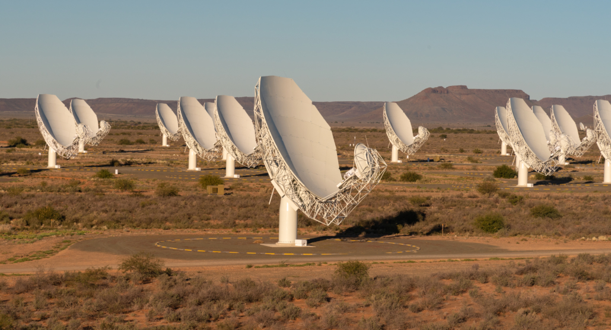
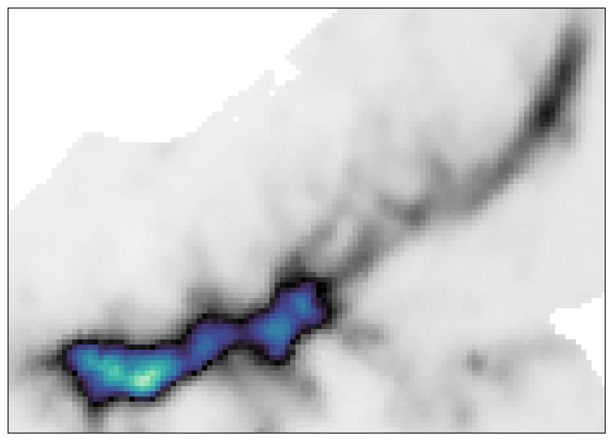

Continuum subtraction
Line-free channels are fitted in visibility space before cube imaging.
Complementary telescopes connect the extended reservoir to the compact structures within it.

The 12 m C2 and C5 configurations and the ACA 7 m array resolve dense cores while retaining larger filament structure. Band 6 observations combine 1.3 mm continuum with molecular lines including C¹⁸O, CO, H₂CO, ¹³CS, and N₂D⁺; total-power line data recover extended gas.
Image: ESO / B. Tafreshi (twanight.org)
PACS and SPIRE maps trace the cloud’s thermal dust emission. The far-infrared spectral energy distribution constrains dust temperature and column density, while the 70 μm and 250 μm views connect embedded heating sources to the extended reservoir.
Image: ESA / AOES Medialab · artist’s impression
ArTéMiS bolometric imaging adds finer detail to the cold-dust structure traced by Herschel. Complementary nFLASH230 spectral-line observations probe molecular gas, linking single-dish measurements of the filament to the interferometric data.
Image: MPIfR
GLIMPSE photometric data distinguish different evolutionary stages of the LANCET filament. IRAC imagery reveals infrared-dark gas, embedded sources, and bright emission around the southern H II regions; the 5.8 μm map also provides context for the ALMA footprints.
Image: NASA / JPL-Caltech / R. Hurt (SSC) · artist’s impression
VVV J, H, and Kₛ imagery traces the stellar population and extinction across the filament. Together with GLIMPSE photometry, these data distinguish evolutionary stages from the dark northern cloud to the illuminated southern H II regions.
Image: ESO
The CORNISH-South 5.5 GHz continuum map resolves ionized emission at 2.5 arcsec. It constrains free-free emission around the H II regions and its contribution to the millimetre continuum used for core and fragment mass estimates.
Image: CSIRO
The MeerKAT Galactic Plane Survey maps extended radio emission along the filament. Its multi-frequency continuum data, including the 1.38 GHz view shown on our front page, complement ATCA in modelling the free-free contribution to the total continuum.
Image: SARAO
Our largely completed continuum workflow combines complementary array configurations and a model of extended emission. Each step below exposes the evidence behind the resulting image.
ACA 7 m and ALMA 12 m pointing centres, uv coverage, and visibility-amplitude profiles. The TP reference represents the reconstructed continuum model.

Comparison of the 7 m, 12 m, and combined interferometric images: extended structure and compact cores are recovered together.

J-comb combines the primary-beam-corrected interferometric image with the 1.3 mm continuum model constructed from dust and free-free SED fitting. This restores diffuse emission and reduces negative bowls while retaining compact structures.

All six targeted narrow spectral windows documented in Paper I are listed below. Frequencies are observing-window centres, not molecular rest frequencies. Coverage does not imply that every transition is detected or has a completed combined cube.
| Molecule | Transition | Window centre (GHz) |
|---|---|---|
| H₂CO | 3₀₃–2₀₂ | 218.248 |
| H₂CO | 3₂₂–2₂₁ | 218.484 |
| C¹⁸O | 2–1 | 219.587 |
| CO | 2–1 | 230.565 |
| ¹³CS | 5–4 | 231.249 |
| N₂D⁺ | 3–2 | 231.350 |
Two wide windows centred at 216.732 and 230.940 GHz provide additional spectral coverage and continuum bandwidth.
Line-free channels are fitted in visibility space before cube imaging.
Current C¹⁸O work tests joint 12 m and 7 m imaging. H₂CO 3₀₃–2₀₂ continuum-subtracted measurement sets are also available.
The C¹⁸O pilot combines the interferometric cube with LSRK total-power data. Its processing status is distinct from the completed continuum products.
The Python package, runnable scripts, and per-task documentation live together in the repository. Data-dependent tasks require their declared local inputs; observational data are not bundled with the code.
python -m pip install -e ".[dev]"
python scripts/prepare_continuum_images.py --stage inspect